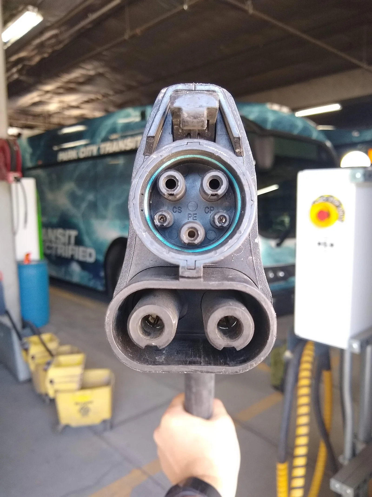
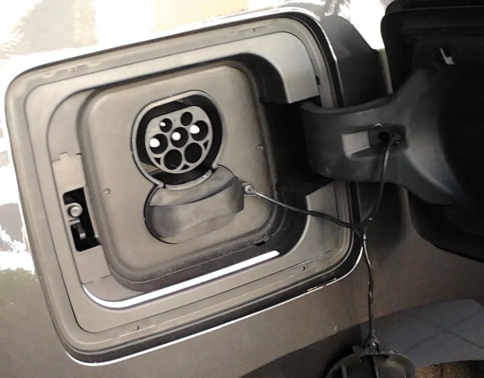

▲ 왼쪽부터 차데모(CHAdeMO), DC콤보(CCS Combo), 타입2 AC 커넥터. 핀 배열만 봐도 세 방식은 한눈에 구분된다 ⓒ Paul Sladen, Wikimedia Commons (CC0 1.0)
전기차 충전소에 처음 가면 케이블이 두세 종류씩 걸려 있어 어떤 걸 잡아야 할지 헷갈리기 쉽다. 이 사이트에는 이미 급속충전 커넥터의 잠금장치 안전 이슈를 다룬 기사가 있으니, 이번에는 안전 문제가 아니라 순수하게 "어떤 커넥터가 어떤 방식이고, 내 차엔 뭐가 맞는지"를 구분하는 실용 가이드에 집중한다.
1. 국내에서 만나는 커넥터 3가지
국내 전기차 충전 인프라에서 마주치는 커넥터는 크게 세 가지로 좁혀진다. 각각 용도와 생김새가 뚜렷이 다르므로, 원리만 알면 헷갈릴 일이 없다.
- DC콤보(Combo-1, CCS): 국내 급속충전의 표준. 위쪽에는 완속용 작은 핀 5개, 아래쪽에는 급속용 큰 핀 2개가 붙어 있는 구조다. 독일 BMW, 미국 GM·포드 등 7개 완성차 업체가 함께 개발한 규격으로, 완속·급속·비상 급속까지 하나의 충전구로 지원할 수 있다는 것이 장점이며 국내에서는 2017년 표준 규격으로 지정됐다.
- 차데모(CHAdeMO): 둥근 원형 커넥터에 큰 핀 4개가 배치된 일본식 급속 규격. 도쿄전력이 개발한 방식으로, 국내에서는 2010년대 초중반 출시된 구형 전기차(초기형 닛산 리프 등)에서 볼 수 있었지만, 최근 국내 판매 신차는 대부분 이 방식을 쓰지 않는다.
- AC 3상(타입2 계열): 완속충전 표준. 원형 커넥터에 7개의 핀이 촘촘히 박혀 있다. 일반 완속(단상)보다 핀이 2개 더 많은데, 3상 전력의 나머지 2상을 추가로 공급하기 위한 구조다. 급속만큼 빠르진 않지만 가정·아파트·회사 주차장의 완속충전기가 대부분 이 방식이다.

▲ DC콤보(CCS) 방식 급속충전 커넥터. 위쪽 작은 핀 5개는 완속·통신용, 아래쪽 큰 핀 2개가 실제 급속 전류가 흐르는 단자다 ⓒ Phasmatisnox, Wikimedia Commons (CC BY-SA 4.0)
2. 충전소에서 한눈에 구분하는 법
| 구분 | DC콤보(Combo-1) | 차데모(CHAdeMO) | AC 3상(타입2) |
|---|---|---|---|
| 충전 방식 | 급속(DC) | 급속(DC) | 완속(AC) |
| 모양 | 상단 5핀+하단 대형 2핀(반달형) | 원형, 대형 4핀 | 원형, 7핀 촘촘 배열 |
| 국내 채택 현황 | 현재 국내 표준 | 구형 일부 차량만 해당 | 국내 완속 표준 |
| 대표 대상 차종 | 대부분의 국내 판매 전기차 | 초기형 닛산 리프 등 구형 수입 전기차 | 국내 판매 대부분 전기차 |
| 충전 소요 시간(예시) | 수십 분(80%까지) | 수십 분(80%까지) | 수 시간 |
3. 내 차에 맞는 커넥터 확인하는 법

▲ 완속충전용 타입2(AC) 인렛. 급속용 DC콤보 인렛과 나란히 뚜껑 하나에 함께 들어있는 차종이 많다 ⓒ Raphael Desrosiers, Wikimedia Commons (CC BY 2.0)
내 차가 어떤 급속 규격을 쓰는지 확인하는 가장 확실한 방법은 아래 세 가지다.
- 차량 사양서·카탈로그 확인: '급속충전 규격' 또는 '콤보 타입' 항목을 확인하면 된다. 국내 출시 차량은 거의 전부 DC콤보(Combo-1)로 표기된다.
- 충전구 뚜껑을 직접 열어보기: 급속용 인렛(구멍 모양)이 위쪽 소형 핀+아래쪽 대형 2핀 구조라면 DC콤보, 둥근 4핀이면 차데모다.
- 충전 앱에서 필터링: 환경부 무공해차 통합누리집이나 민간 충전 앱에서 커넥터 종류를 필터로 걸어 검색하면 내 차와 맞는 충전기만 골라볼 수 있다.
4. 어댑터가 필요한 경우

▲ 테슬라 슈퍼차저(NACS 방식). 국내 DC콤보 차량이 슈퍼차저를 이용하려면 전용 어댑터가 필요하다 ⓒ Wikimedia Commons
기본적으로 DC콤보, 차데모, AC 3상은 서로 다른 물리 규격이라 커넥터가 물리적으로 맞물리지 않는다. 다만 다음과 같은 예외적인 경우 어댑터가 필요하거나 활용된다.
- 구형 차데모 차량이 DC콤보 충전기를 쓰려는 경우: 별도의 차데모-DC콤보 변환 어댑터가 필요하며, 충전 속도가 제한될 수 있다.
- DC콤보 차량이 테슬라 슈퍼차저(NACS)를 이용하려는 경우: 차종·제조사에 따라 전용 어댑터를 통해 제한적으로 이용이 가능한 경우가 있다. 이용 전 제조사 공지를 확인해야 한다.
- 완속(AC)은 상대적으로 호환 폭이 넓다: 완속 인렛은 차종 간 형태가 비교적 표준화돼 있어, 급속만큼 방식이 갈라지지 않는다.
5. 충전 전 체크리스트
체크 포인트
- 내 차의 급속 규격(DC콤보/차데모)을 미리 사양서에서 확인해두자.
- 충전소 도착 전, 충전 앱에서 커넥터 종류를 필터링해 헛걸음을 줄이자.
- 구형 차데모 차량이라면 DC콤보 전용 충전기에서는 충전이 불가능하다는 점을 기억하자.
- 어댑터를 쓸 계획이라면 반드시 제조사 인증 제품인지 확인하자.
6. 정리
체크포인트
- 국내 급속 표준은 DC콤보(Combo-1), 완속 표준은 AC 3상(타입2)이다.
- 차데모는 구형 수입 전기차 일부에서만 볼 수 있는 방식이다.
- 세 방식은 핀 개수·배열만 봐도 눈으로 구분할 수 있다.
- 방식이 다르면 원칙적으로 호환되지 않으므로, 충전 전 내 차 규격부터 확인하자.